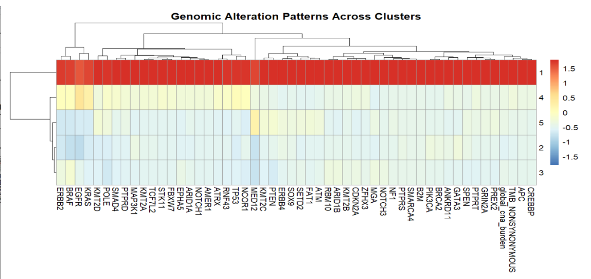
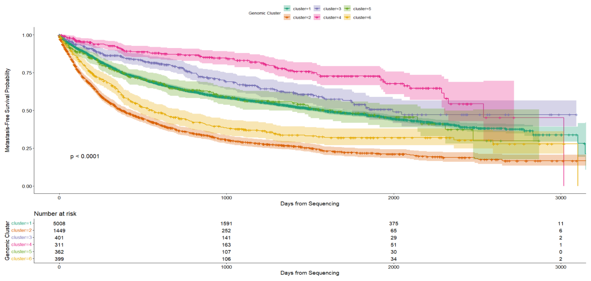

About
We analyzed time-to-metastasis outcomes in non-metastatic solid tumor patients from the MSK-CHORD clinicogenomic cohort (25K+ samples), integrating primary tumor genomic features (mutations, TMB, CNA burden) with clinical timelines, to identify genomic subtypes associated with metastatic risk and evaluate their prognostic relevance using survival analysis.
Our primary outcome was time to metastasis (TTM) measured from the date of genomic sequencing. We included patients with non-metastatic solid tumors at baseline with available genomic and clinical data, and excluded those with documented metastasis prior to or at sequencing, Stage IV or distant metastatic disease at baseline, progression at or before sequencing, no post-sequencing follow-up time, or incomplete genomic or outcome data..
Methods
We fit a Random Survival Forest (RSF) model with the following covariates: gene-level mutation indicators, tumor mutational burden (TMB), and global copy number alteration (CNA) burden. Analysis was performed in R using the randomForestSRC and survival packages.
- Primary outcome: Time to metastasis (TTM)
- Model: Random Survival Forest (1,000 trees)
- Covariates: Gene-level mutations, TMB, CNA burden, Cancer Type
- Software: R 4.4.2
Results
Heatmap analysis showed distinct mutation patterns across five clusters, with Cluster 1 exhibiting high mutation burden and genomic instability,and Cluster 2 displaying low mutation frequency despite a clinically aggressive phenotype

Metastasis-free survival (MFS) probabilities stratified by five unsupervised genomic clusters (k=5). The Kaplan-Meier curves demonstrate significant survival stratification across the identified subgroups (Log-rank). Shaded regions represent the 95% confidence intervals, indicating robust separation between the high-risk (Cluster 2, orange) and low-risk (Cluster 1, teal) molecular subtypes. The "Number at risk" table (bottom) details the patient census at 1,000-day intervals, confirming substantial data density throughout the follow-up period.

Team
- Indhira Vadivel · University of Michigan